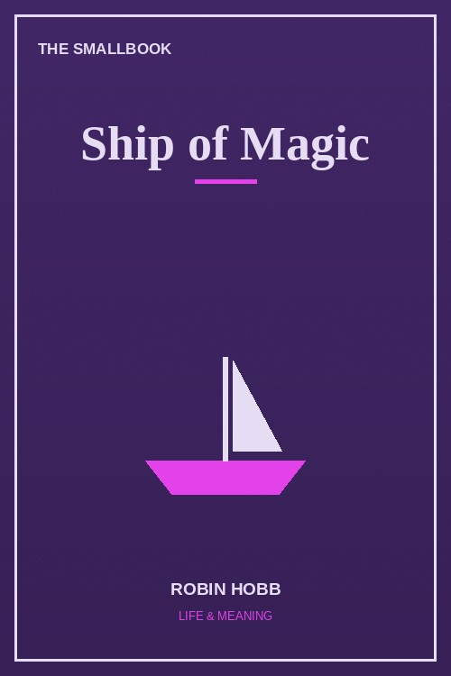

Library › Life & Meaning
Ship of Magic - Summary & Key Lessons

The first Liveship Traders novel: a family, a sentient ship, and the sea's price for both.
📖 OPEN THE FULL INTERACTIVE BREAKDOWN →🌐 Read it in Hindi, Hinglish, Gujarati, Tamil & 22 more languages, with audio.
💡 The Big Idea
In Bingtown, trader families own liveships, vessels of wizardwood that awaken after three generations of family captains die aboard. When Ephron Vestrit dies, the Vivacia quickens, but the family, drowning in debt, gives her captaincy to a son in law instead of daughter Althea. Around that injustice Robin Hobb builds her themes: slavery human and serpent, women's competence denied, trade built on suffering upriver, and a ship who must decide what she is for. It is a novel about inheritance: what families hand down, debts, ships and wounds alike.
🧠 The 8 Key Lessons
Lesson 1: Althea Vestrit and the Crime of Being Competent While Female
Althea's Story
Althea grew up sailing, her father's true heir in skill, and watches the ship given to her brother in law because Bingtown's customs cannot see a woman captain. Her flight, disguised as a ship's boy on other vessels to earn the papers her birth denied her, is the novel's engine of indignation. Robin Hobb writes her competence without apology and the system's waste of it as an economic as much as moral failure, a theme the whole trilogy keeps invoicing.
📖 Example: Aboard the Reaper, Althea works under a false name through storms and slaughter decks, collecting the experience certificates that will prove what everyone on the Vivacia already knew. The reader's fury at the paperwork is the point: systems make the capable re-earn, at interest, what inheritance gives the unready free. Read the full example →
⚡ Do this: Name one competence in your world currently re-earning what birth or gender should not have taxed. Be one signature on their papers this month.
Lesson 2: The Vivacia Wakes: What Our Instruments Would Say
The Quickening
The liveship awakens with her family's memories in her timbers and a child's moral clarity about the trade she is built for, including its horrors. Robin Hobb's device, the tool that remembers and judges, interrogates every industry built on hidden suffering: the Rain Wild goods upstream, the slave ships alongside. The Vivacia's innocence forces the humans around her to hear their own justifications aloud, in her voice, and the novel's ethics are conducted through that discomfort.
📖 Example: When the Vivacia learns what her cargo trade connects to, her refusal destabilises the family's finances and the reader's sympathies at once. A ship declining to be complicit is fantasy's version of the audit every real supply chain eventually faces, conducted here by the supply chain itself. Read the full example →
⚡ Do this: Run the Vivacia test on one system you benefit from: if its instrument could speak, what would it report? Follow one finding.
Lesson 3: Wintrow, Kyle and the Family Firm's Casualties
The Vestrit Household
Wintrow, a priest in training, is pressed into sailing by his father Kyle, whose certainty that the family firm justifies any conscription drives the novel's domestic tragedy. Robin Hobb draws the household with unusual fairness: Kyle is no monster, only a man whose vocabulary contains duty and debt and no word for a son's calling. The chapters teach the cost of family businesses run as destiny machines, and the different inheritances, ship, faith, freedom, each child is actually owed.
📖 Example: Wintrow's stolen vocation, his hands meant for a monastery forced to the rigging, becomes the measure of Kyle's leadership: every order obeyed and every order resented, competence rising as love drains. Readers who have worked in family firms recognise the weather and write to Robin Hobb about this plot more than the serpents. Read the full example →
⚡ Do this: If you run anything families inherit, write the exit honours this year: how a child may decline the firm and keep the family.
Lesson 4: The Serpents' Chapters Are the Planet Talking
The Serpent Narratives
Interleaved chapters follow sea serpents, intelligent, migratory and desperate, whose lifecycle is entangled with the liveships in ways the humans profiting from both never suspect. Robin Hobb makes the reader hold two ledgers: the traders' accounts, in coin, and the serpents', in memory and extinction. It is the Vivacia test at species scale: an entire economy whose instruments can think, filed under cargo. The trilogy's later volumes cash these chapters fully, and rereaders consistently report they become the favourites.
📖 Example: The serpent Maulkin's fragmenting memories of a promised river and a shepherd species lost to history read as elegy and indictment together. Robin Hobb has said the serpents let her write the environment's point of view without a lecture, and the elegiac chapters are assigned in ecocriticism courses for exactly that sleight of hand. Read the full example →
⚡ Do this: For one product you love, trace its serpent chapters: the unseen lifecycle upstream. Let one purchase change in response this month.
Lesson 5: Kennit's Ambition Is a Masterclass in Charm as Predation
The Pirate Thread
Captain Kennit, the pirate who dreams of a kingdom, is one of fantasy's great studies in charisma: maimed, brilliant, lucky through an amulet that whispers his own justifications back to him, and hollow where other people should be. Robin Hobb writes him seductively enough that readers catch themselves rooting, then administers the audit: every charm offensive itemised against its victims. The chapters teach pattern recognition for the real world, where Kennits interview well and leave harbours of Wintrows.
📖 Example: His wizardwood charm, carved from his own ship's wood, flatters his worst impulses into destiny, a device readers have mapped onto every echo chamber since, algorithmic ones included. Robin Hobb wrote it in 1998. The mapping is left as an exercise the reader cannot avoid doing. Read the full example →
⚡ Do this: Identify your charm: the voice, feed or friend who only ever agrees with your worst plan. Install one honest counsellor beside it this month.
Lesson 6: Bingtown's Ledger: Prosperity and Its Upstream
The Trader World
The Bingtown Traders' gentility floats on Rain Wild goods harvested in acid rivers and on ships built from a material whose origin the trilogy slowly prices. Robin Hobb's worldbuilding is economic history in costume: every luxury in the parlour scenes has an upstream chapter, and the novel makes comfortable readers do the tracing their own parlours require. The Vestrits' fall is thus not bad luck; it is the upstream bill arriving, as it eventually does in every currency.
📖 Example: The satisfaction with which Bingtown debates tariffs while slavers dock beside the liveships is drawn with a historian's patience. Jamaillia's satrap, the Rain Wilders' deformities, the serpents' famine: the parlour's candles are lit, the novel insists, by all of it, and the insistence is the plot. Read the full example →
⚡ Do this: Light one candle knowingly: pick a household luxury and learn its upstream this week. Decide, in writing, whether the price is one you accept.
Lesson 7: Robin Hobb's Craft Lesson: Consequences Do Not Expire
Bingtown and Beyond
The trilogy's second half is a masterclass in moral compound interest: Kyle's cruelty, the Vestrit debts, the serpents' stolen memories, all accrue until every character is paying for transactions they forgot signing. Deepening for writers and readers alike is to study Hobb's patience. She lets consequences ripen across hundreds of pages while lesser fantasies reset their ledgers each chapter. The world feels real because its debts are collectible, which is also, the serpent chapters suggest, how ecologies experience us.
📖 Example: Readers consistently report that characters they despised in book one, Malta above all, earn fierce loyalty by book three without a single personality transplant, only consequences, witnessed. It is the Bildungsroman as accounting: growth is what a character looks like after the invoices have been paid in public. Read the full example →
⚡ Do this: Audit one grudge or Loyalty of yours this week for its original transaction. Ask what the ledger looks like now, and whether you are still collecting on schedule.
Lesson 8: What the Liveships Ask About Our Machines
Bingtown and Beyond
Wizardwood's horror is a technology stack built on stolen minds: a ship that wakes because serpents died screaming into timber, traded by merchants who inherited the bargain and preferred not to audit it. Deepening means recognising the pattern as our own supply chains wearing fantasy's clothes. Every age builds its conveniences on a substrate it declines to inspect; the novel merely lets the substrate speak, in first person, from the figurehead. The question the trilogy leaves is not whether the Bingtown traders were villains, but whether ignorance maintained for profit is a defence anywhere.
📖 Example: The Rain Wild traders' respectability, the Bingtown council's ledgers, the Chalcedean slave markets propping up both: Hobb distributes complicity so thoroughly that readers finish hunting for an innocent economy in the book and find none, which is, of course, the intended mirror for the reader's own shipping history. Read the full example →
⚡ Do this: Trace one object you own back three suppliers this week: materials, labour, origin. Write down where the trail goes dark and what that darkness is worth to you.
✅ 5-Step Action Plan
- Sign one person's papers: endorse a competence being taxed unfairly.
- Run the Vivacia test on one supply chain you feed.
- Write exit honours for any family enterprise you influence.
- Learn one inheritance in your family, debt or gift, with its true story.
- Ask what your household's ship, its main asset, would say if it woke.
- Read it as the first of three; the serpents pay off slowly and fully.
- Protect one competence in a young person with papers, not just praise.
⚠️ When This Doesn't Work
It is the first volume of a long trilogy with many viewpoints and slow tides; the serpents' chapters baffle some readers until book two. Depictions include slavery and violence integral to its argument against both.
💀 The Graveyard Proves It
💬 Best Quotes from Ship of Magic
- “A ship is not a thing. A ship is a promise, and promises wake up.”
- “The sea keeps every account, and collects in its own currency.”
- “Inheritance is just debt with better stories told about it.”
Interactive version: mark lessons as read, listen in your language, share quote cards.